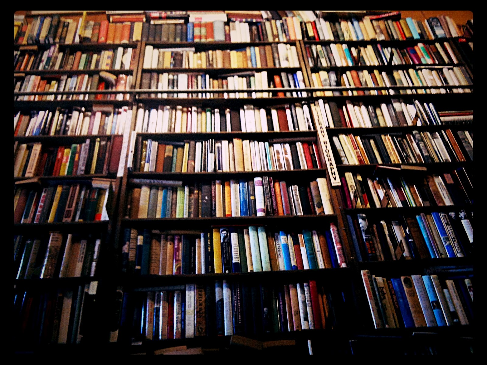
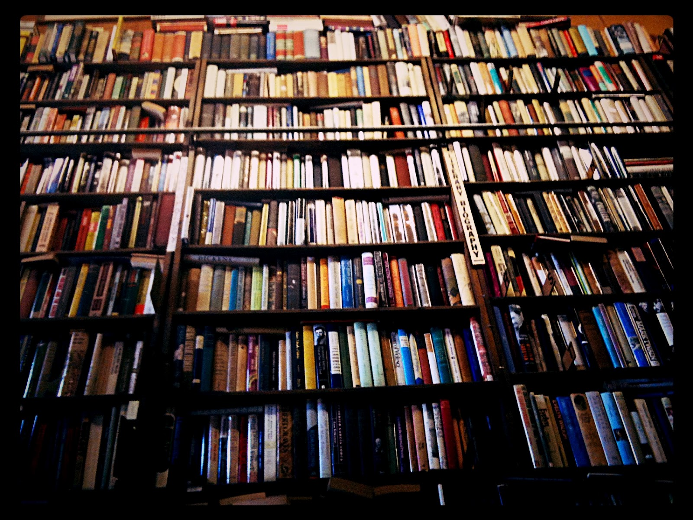

Boghandlen er et litterert samlingssted for mennesker der ønsker kulturel Inspiration, eller blot udvide intellektet blandt ligesindede,
De hyggelige lokaler danner rammen om næsten daglige arrangementer.
Boghandlen blev i 1814 etableret i det centrale Bogense af Stads Arkivar Viggo Skriversen.
Her 200 år efter har vi netop afsluttet en større renovering af de gamle lokaler og udviklet et nyt koncept omkring glæden ved bøger og den trykte tekst!
Bogklubben!
I bogklubben kan du føle dig udfordret kulturelt. Deltag i vore mange arrangementer eller køb aktuelle bøger med fordele.
Boghandlens intime CafÈ er udgangspunktet for en eftermiddag/aften i afslappende omgivelser med litterÊre udfordringer, inspiration. CafÈen har sin egen Vin Import!
Man - tor.: 09.00 - 18.00
Fre.: 09.00 - 21.00
Lør.: 10.00 - 14.00
 
